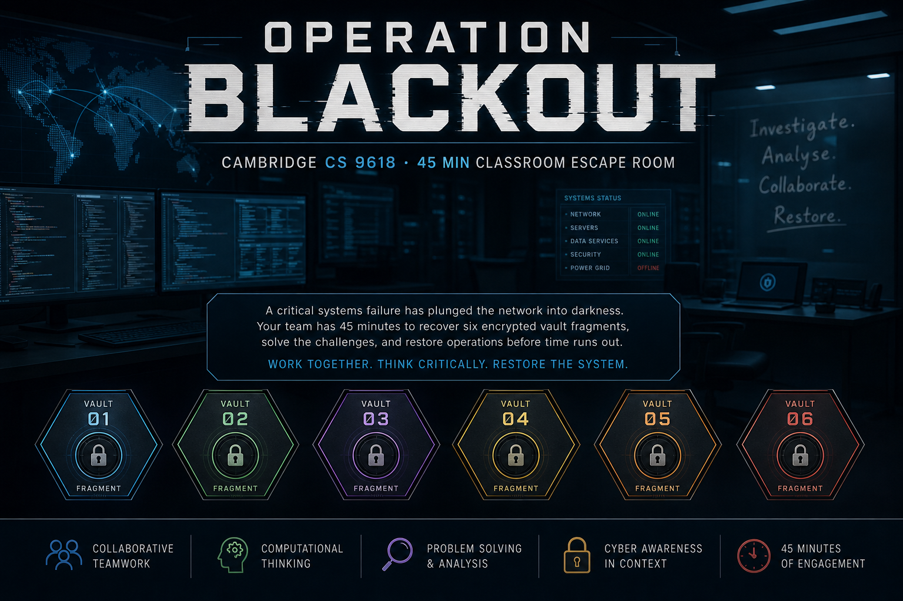
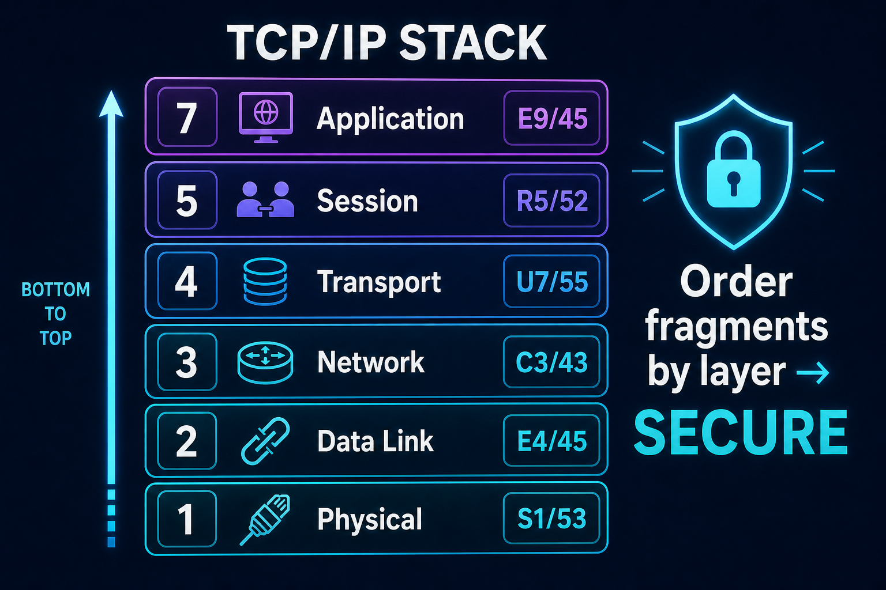
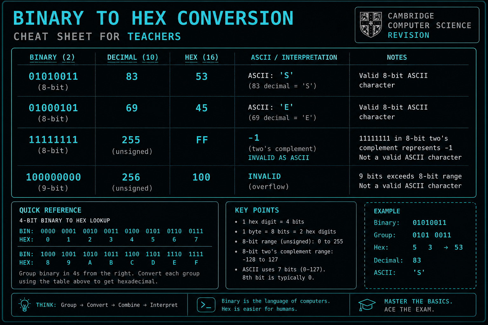
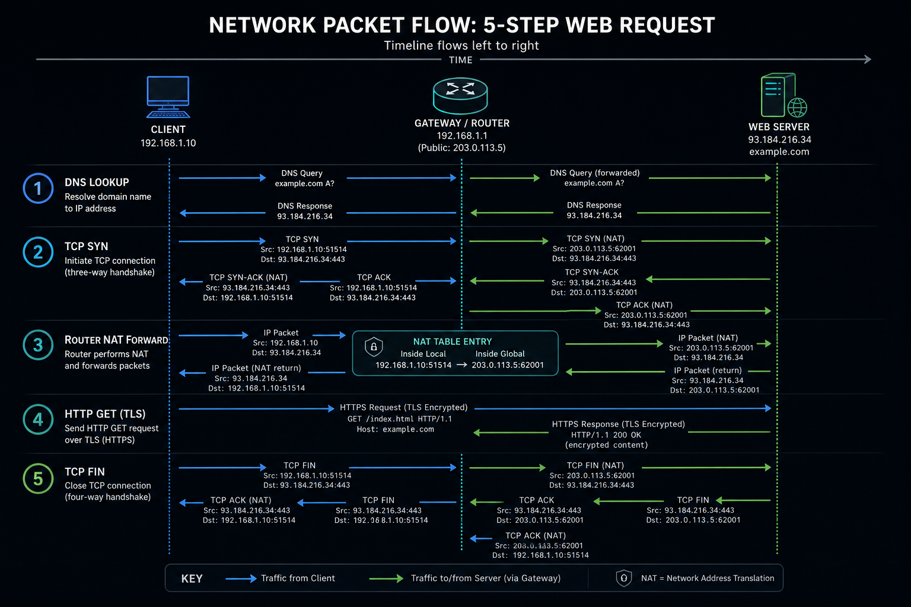
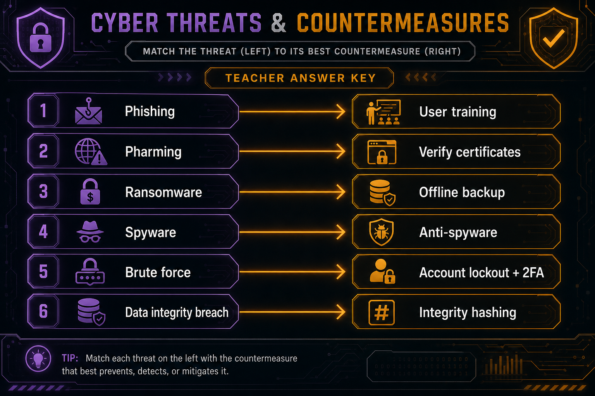
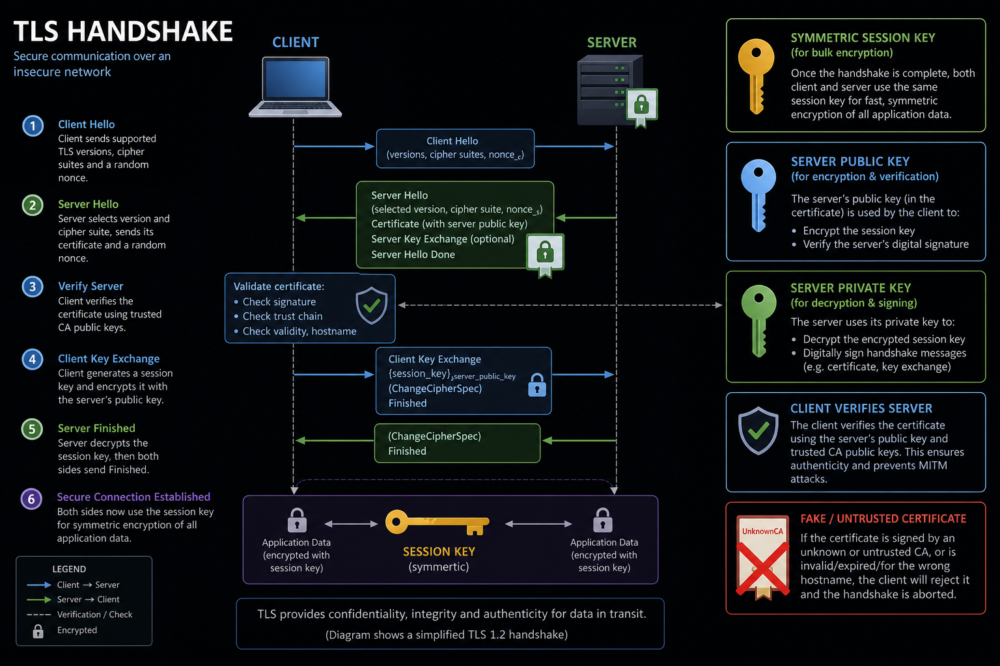
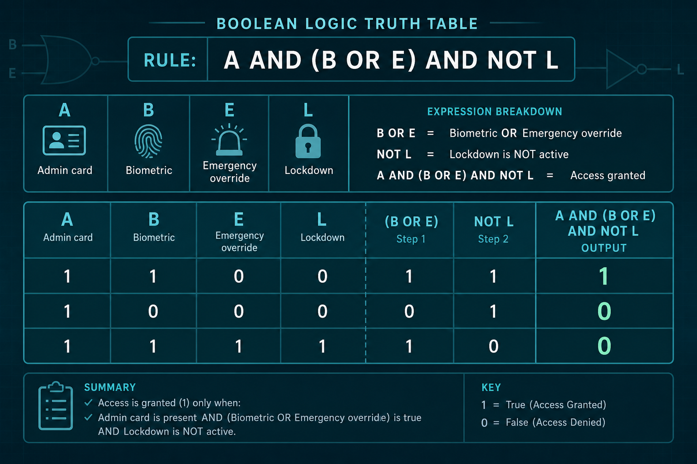
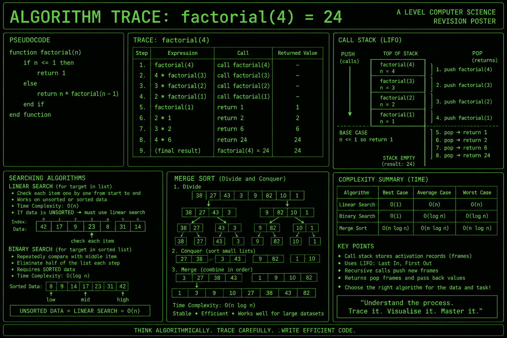
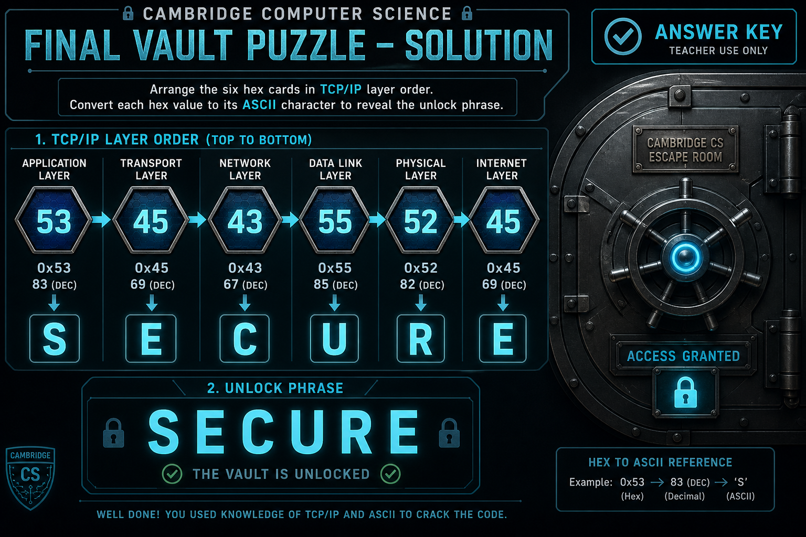
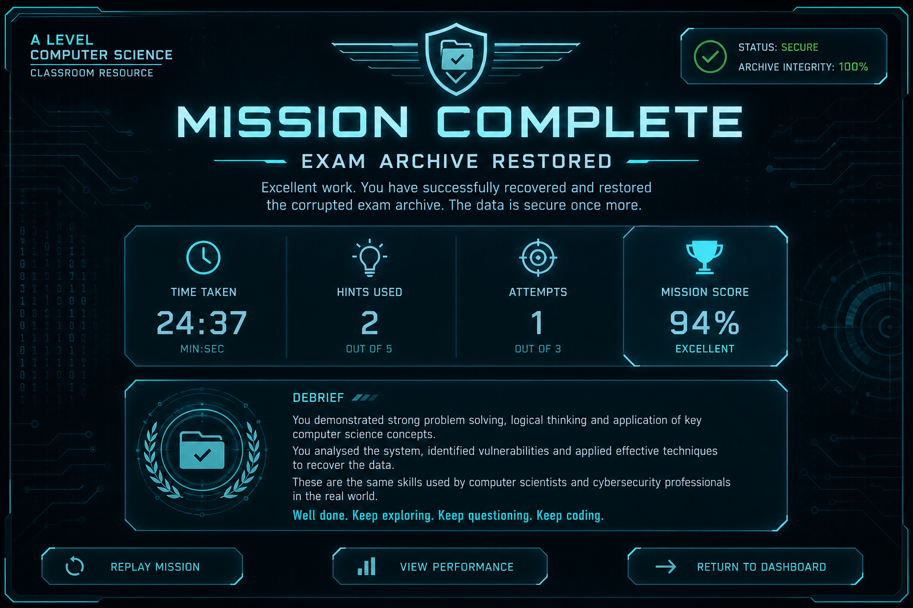

CAMBRIDGE INTERNATIONAL AS & A LEVEL
Complete Step-by-Step Solution Guide
Computer Science 9618 · Cyber Analyst Escape Room
Duration: 40–50 minutes · 6 puzzle rooms + final vault
CONFIDENTIAL — TEACHER USE ONLYDo not distribute to students before the activity.
Version 1.0 · Operation Blackout
npm install (first time only).npm run dev.http://localhost:5173).Navigate to /teacher or click Teacher mode in the header for live answers, syllabus links, reset progress, and leaderboard reset.

Each room awards one two-digit hexadecimal byte. The final vault is a meta-puzzle: students must reorder fragments by TCP/IP stack layer (lowest first), concatenate the hex bytes, convert to ASCII, and type the phrase.
| Stack layer | Room | Fragment (hex) | Denary | ASCII | Label in game |
|---|---|---|---|---|---|
| 1 — Physical | Room 5 (Logic Lock) | 53 | 83 | S | S1 |
| 2 — Data Link | Room 1 (Login Banner) | 45 | 69 | E | E4 |
| 3 — Network | Room 2 (Network Trace) | 43 | 67 | C | C3 |
| 4 — Transport | Room 4 (Certificate Chain) | 55 | 85 | U | U7 |
| 5 — Session | Room 3 (Threat Console) | 52 | 82 | R | R5 |
| 7 — Application | Room 6 (Algorithm Vault) | 45 | 69 | E | E9 |
53 45 43 55 52 45SECURE

0Students read the classified briefing and click Accept mission. No puzzle input is required.
Teaching notes: Emphasise this is defensive cyber forensics only — simulated logs and toy examples. Clarify that hints reduce score but never block progress.
Syllabus: §3.1 Number systems · §3.2 Character sets · Two's complement

A corrupted login banner with five data blocks:
| Block | Value | Type |
|---|---|---|
| BLOCK_A | 01010011 | 8-bit binary |
| BLOCK_B | 11111111 | 8-bit binary (two's complement) |
| BLOCK_C | 100000000 | 9-bit binary (invalid) |
| BLOCK_D | 01000101 | 8-bit binary |
| CHECKSUM | 85 | Denary (distractor) |
Convert 8-bit binary to denary by summing place values:
Bit positions: 128 64 32 16 8 4 2 1 BLOCK_A: 0 1 0 1 0 0 1 1 64 + 16 + 2 + 1 = 83
83 (This is ASCII character 'S', but the fragment comes from a separate question.)Divide by 16 repeatedly:
69 ÷ 16 = 4 remainder 5 Therefore 69₁₀ = 45₁₆
Check: BLOCK_D is 01000101 = 64+4+1 = 69 = ASCII 'E'.
45In 8-bit two's complement, the MSB indicates sign. All bits set in 8 bits represents −1.
11111111 (8-bit two's complement) = -1
This is a distractor — not a printable ASCII banner character.
-1ASCII bytes are exactly 8 bits. BLOCK_C has 9 bits (100000000) — overflow/invalid.
CEnter the hex from Question 2.
45 · Fragment E4 · Data Link layer (2)Syllabus: §4.1 LAN/WAN · DNS · TCP/IP · packet switching · public/private IP

A network map (client 192.168.12.8 → gateway/NAT → server 203.0.113.44:443) and five shuffled packet events to reorder, plus a security implication multiple-choice question.
archive.uni-lab.edu must resolve to IP 203.0.113.44 before any connection.The trace shows private IP 192.168.12.8 — a reconnaissance risk if logs are exposed (attackers map internal topology). TLS is in use (not HTTP-only); DNS being down would prevent connection entirely.
No separate fragment field in Room 2 — completing the room awards fragment automatically on success.
43 (ASCII C) · Fragment C3 · Network layer (3)Syllabus: §6.1 Security · malware · phishing · privacy vs integrity

| Incident | Correct countermeasure | Reasoning |
|---|---|---|
| Credential harvest email (phishing) | Security awareness training + email filtering | Users surrendered valid passwords willingly — stronger password policy alone fails. |
| DNS redirect (pharming) | Verify digital certificates & monitor DNS/hosts | Attack redirects to look-alike site; certificate verification catches impersonation. |
| Encrypted file shares (ransomware) | Offline backups + anti-malware scan | Restore from clean backup; scan to remove malware. |
| Keylogger (spyware) | Anti-spyware scan + least-privilege accounts | Detect/remove spyware; limit account privileges. |
| Repeated login attempts (brute force) | Account lockout + two-factor authentication | Rate-limit guesses; 2FA adds second factor. |
| Altered audit records (integrity breach) | Integrity checks (hashing/audit trails) | Data was modified — need integrity verification, not just encryption. |
Students enter hex for letter R (integrity / access rights theme): R = denary 82 = hex 52.
52 · Fragment R5 · Session layer (5)Syllabus: §17.1 Symmetric/asymmetric encryption · TLS · digital certificates · signatures

| Operation | Assign | Explanation |
|---|---|---|
| Encrypt exam archive stream (bulk data) | Symmetric session key | Fast symmetric encryption for large payloads after handshake. |
| Encrypt session key for server | Server's public key | Client encrypts session key so only server can read it. |
| Decrypt session key | Server's private key | Only server possesses private key to decrypt. |
| Sign handshake message | Server's private key | Proves server identity (digital signature). |
| Verify server signature | Server's public key | Client verifies signature with server's public key. |
Select the certificate issued by UnknownCA Self-Signed — not trusted by the lab CA chain. Keep Cambridge Research CA certificate.
U = denary 85 = hex 55.
55 · Fragment U7 · Transport layer (4)Syllabus: §3.2 Logic gates · §15.2 Boolean algebra

Open only if the admin card is valid AND either the biometric match is true OR the emergency override is active — but never if lockdown is active.
Variables: A = admin card · B = biometric · E = emergency override · L = lockdown
A AND (B OR E) AND NOT L
Brackets essential: without them, operator precedence gives wrong results.
| A | B | E | L | Open? | Working |
|---|---|---|---|---|---|
| 1 | 0 | 0 | 0 | 1 | Admin valid, no lockdown → open |
| 1 | 0 | 0 | 1 | 0 | Lockdown active → always closed |
| 0 | 1 | 1 | 0 | 0 | No admin card → closed despite B and E |
S = denary 83 = hex 53.
53 · Fragment S1 · Physical layer (1)Syllabus: §9.2 Searching/sorting · §19.1 Recursion · ADTs · Big O

Binary search requires sorted data. The pseudocode falls through to the FOR loop (linear search) when unsorted.
Each recursive call pushes a stack frame; returns pop frames — LIFO = stack.
factorial(4) = 4 × factorial(3) factorial(3) = 3 × factorial(2) factorial(2) = 2 × factorial(1) factorial(1) = 1 Unwind: 1 → 2×1=2 → 3×2=6 → 4×6=24
24Merge sort is O(n log n) — not O(n²) like bubble sort.
E = denary 69 = hex 45.
45 · Fragment E9 · Application layer (7)OOP (paradigm mixing procedures with objects)
All six rooms must be completed. Vault unlocks when six fragments appear in the progress tracker.
53454355524553454355524553 → S 45 → E 43 → C 55 → U 52 → R 45 → E
SECURESECURE
| Component | Detail |
|---|---|
| Base score | 1000 points |
| Time bonus | Up to ~450 pts (faster than 45 min target) |
| Hint penalty | −35 per hint used (any room) |
| Attempt penalty | −12 per incorrect submit beyond 6 total |
| Room 6 bonus | +75 for answering OOP |
| Minimum score | 100 (floor) |
| Topic area | Spec ref | Room(s) |
|---|---|---|
| Binary, hex, ASCII, two's complement | §3.1, §3.2 | Room 1, 5 |
| Networks, DNS, TCP/IP, routing | §4.1 | Room 2, Vault |
| Security threats & countermeasures | §6.1 | Room 3 |
| Encryption, TLS, certificates | §17.1 | Room 4 |
| Logic gates, Boolean algebra | §3.2, §15.2 | Room 5 |
| Algorithms, ADTs, recursion, Big O | §9.2, §19.1 | Room 6 |
INTRO: Accept mission (no answers) ROOM 1: BLOCK_A denary = 83 Denary 69 hex = 45 BLOCK_B two's complement = -1 Invalid block = C Fragment = 45 ROOM 2: Order = DNS → SYN → Route → HTTP → FIN Security = Private IP reconnaissance risk Fragment = 43 ROOM 3: Phish → user education + email filter Pharm → verify certificates Ransom → offline backup + AV Spy → anti-spyware Brute → lockout + 2FA Hospital → integrity checks Fragment = 52 ROOM 4: Bulk encrypt → symmetric key Encrypt session key → server public Decrypt session key → server private Sign → server private Verify → server public Reject → UnknownCA cert Fragment = 55 ROOM 5: Expression = A AND (B OR E) AND NOT L Truth: (1,0,0,0)→1 (1,0,0,1)→0 (0,1,1,0)→0 Fragment = 53 ROOM 6: Search = linear | ADT = stack | factorial(4) = 24 Merge sort = O(n log n) | Bonus = OOP Fragment = 45 VAULT: Layer order: room5→1→2→4→3→6 Hex: 534543555245 Phrase: SECURE